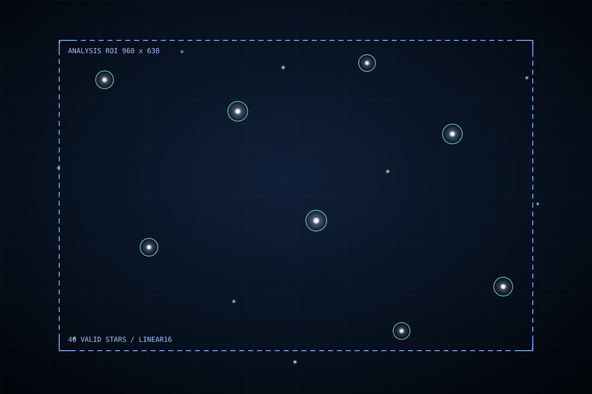

Camera / protected workflow
Focus assistant
Reserve the camera, inspect a linear raw crop, and compare repeatable measurements while physically adjusting the lens.
Owner only
Simulated data
Focus session activeNormal cadence paused at a safe capture boundary
- Remaining
- 08:34
- Previous mode
- Automatic night
- Restore
- Exposure + gain + cadence
Static interaction study. Controls and measurements on this page do not execute camera operations.
Latest focus frame / 0.8 sec old
Linear raw analysis crop
960 x 630 analysis ROI from 3552 x 3552 Bayer RGGB Mono16 frame
- Focus score
- 82Best 86
- Median FWHM
- 2.8 pxLower is better
- Valid stars
- 468 rejected
- Saturation
- 0.03%Within range
Current session
Focus trend
Compare only after exposure and gain stabilizeManual adjustment guide
- Adjust the lens by a small repeatable amount.
- Wait for two accepted frames at the same setpoint.
- Seek higher score and lower median FWHM.
- Mark the best stable point before ending the session.
Not availableHardware ROI, binning, offset control, focuser movement, and autofocus require future capability contracts.